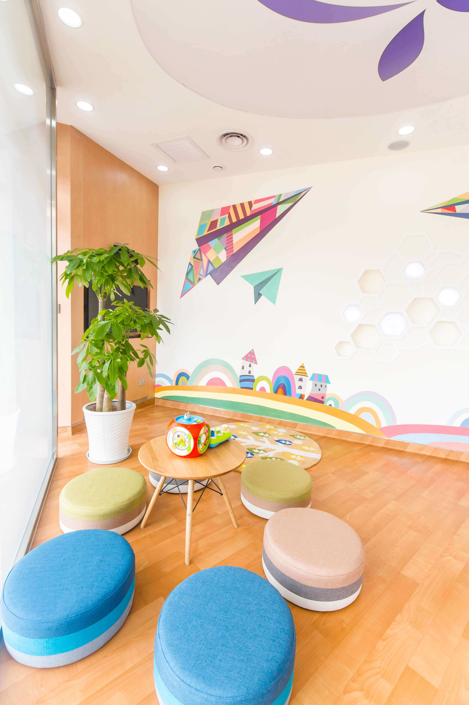

丁香儿童医疗保险
-
三大优势贴心呵护 宝贝的专属健康方案
全面健康管理模式，
远离疾病从预防开始不只为宝贝提供健康诊疗服务，也为家长提供日常喂养、保健指导等育儿帮助，让宝贝不生病、少生病。
重大疾病有保障
42 种重大疾病一次性给付 50 万元，更有 20 万元轻症疾病保障，守护在家庭最需要关爱时。
专业优质服务体验
宝贝身边的健康守护者专业检查 0 误诊
资深儿科医生团队
告别排队，避免交叉感染
线上预约就诊，安全就医环境
不带钱包随时看
系统自动结算诊金，不限次数就诊
全程掌握宝宝生长情况
线上线下一对一专属医护团队，健康持续呵护 -
丁香诊所 宝贝就医第一站
常见病、多发病，一站式解决
预约安排不等待， 科学评估不盲目， 精准检查不奔波，童趣元素不恐惧， 诊室分开不感染。
预约安排不等待
科学评估不盲目
精准检查不奔波
童趣元素不恐惧
诊室分开不感染疑难杂症、大病，转诊二级以上公立医院
公立医院专病专治， 门诊住院均报销。
-
产品信息投保年龄：出生满 30 天至 14 周岁保 费：6166元 / 年丁香专属增值服务儿童发育评估1 年至少 1 次基础版儿童发育评估
（具体次数根据被保险人年龄所需）看诊诊金优惠被保人父母看诊即享诊金 8 折优惠
（全年不限次数）成人体检优惠被保人父母购买成人体检套餐即享
9 折优惠（全年 2 次优惠名额）Online
家庭医生服务赠送 3 个月家庭套餐一份
（价值 600 元）家庭医生线下
沙龙不定期举行，
免费参加保障期限：1 年，可续保至 14 周岁保障额度：保险责任丁香诊所门诊、
检查、用药100% 报销，累计 10 万元转诊公立医院
住院100 万元，年免赔额 1 万元42 种重大
疾病50 万元轻症疾病保障20 万元赔付比例社保赔付后 100% 社保未赔付
80%丁香儿童医疗保险扫一扫，立即购买
宝贝的专属健康专家* 诊所服务咨询电话：0571 - 8668 7392 / 2823 5136
* 保险服务咨询电话：95522 转 3
- 微信自助预约
- 高效就诊流程
- 诊后微信随访
杭州市滨江区滨盛路口 2313 号 (长河路滨盛路口)
T: 0571-86687392
E: dxzs01@dxy.cn